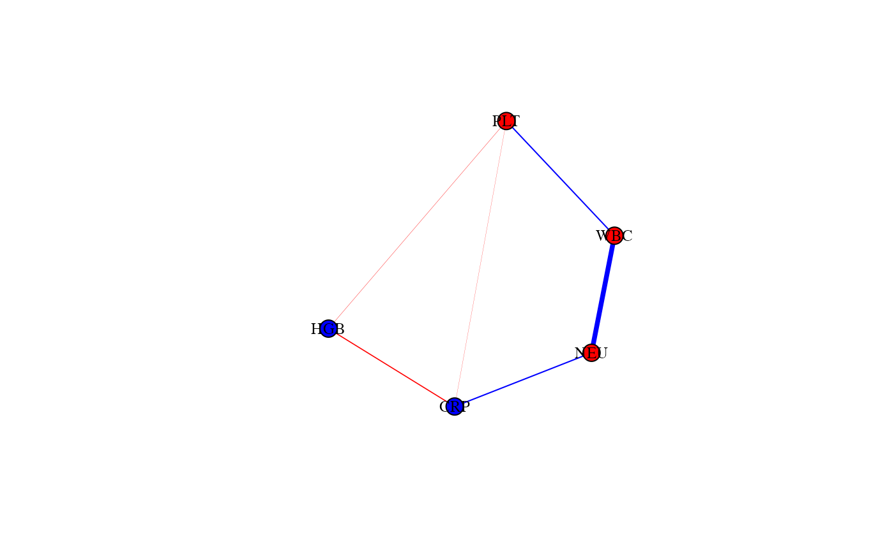

Update community and layer color palettes in MixMashNet objects
Source:R/update_palette.R
update_palette.RdUpdates the color palettes associated with communities and/or layers in
fitted mixMN_fit and multimixMN_fit objects.
For mixMN_fit objects, community_colors must be a named
character vector specifying colors for community labels in
object$communities$palette.
For multimixMN_fit objects, community_colors must be a named
list whose elements correspond to layer names. Each element must be a named
character vector specifying colors for the community labels of that layer.
The list may be partial, so only the specified layers are updated.
For multimixMN_fit objects, layer_colors updates the palette
stored in object$layers$palette.
The function replaces only the colors corresponding to the provided names, leaving all other colors unchanged. Unknown layer names, community labels, or layer labels are ignored with a warning.
Usage
update_palette(object, ...)
# S3 method for class 'mixMN_fit'
update_palette(object, community_colors = NULL, layer_colors = NULL, ...)
# S3 method for class 'multimixMN_fit'
update_palette(object, community_colors = NULL, layer_colors = NULL, ...)Arguments
- object
An object of class
mixMN_fitormultimixMN_fit.- ...
Further arguments passed to methods.
- community_colors
For
mixMN_fitobjects, an optional named character vector specifying new colors for communities.For
multimixMN_fitobjects, an optional named list whose names are layer names and whose elements are named character vectors specifying new colors for communities within each layer.- layer_colors
Optional named character vector specifying new colors for layers. Only applicable to
multimixMN_fitobjects.
Details
For single layer fits, only community_colors is used.
For multilayer fits:
community_colorsupdates community palettes within the specified layers;layer_colorsupdates the palette of the layers themselves.
For multilayer fits, community_colors can be partial: layers not
included in the list are left unchanged.
Examples
data(bacteremia)
vars <- c("WBC", "NEU", "HGB", "PLT", "CRP")
df <- bacteremia[, vars]
fit <- mixMN(
data = df,
lambdaSel = "EBIC",
reps = 0,
seed_model = 42,
compute_loadings = FALSE,
progress = FALSE
)
fit$communities$palette
#> 1 2
#> "#E16A86" "#00AD9A"
fit2 <- update_palette(
fit,
community_colors = c("1" = "red", "2" = "blue")
)
fit2$communities$palette
#> 1 2
#> "red" "blue"
set.seed(1)
plot(fit2)
